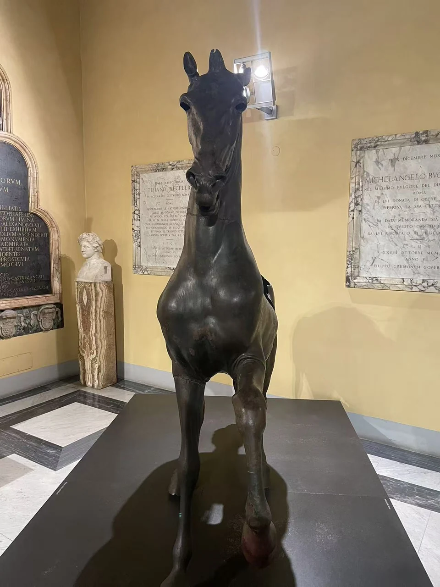
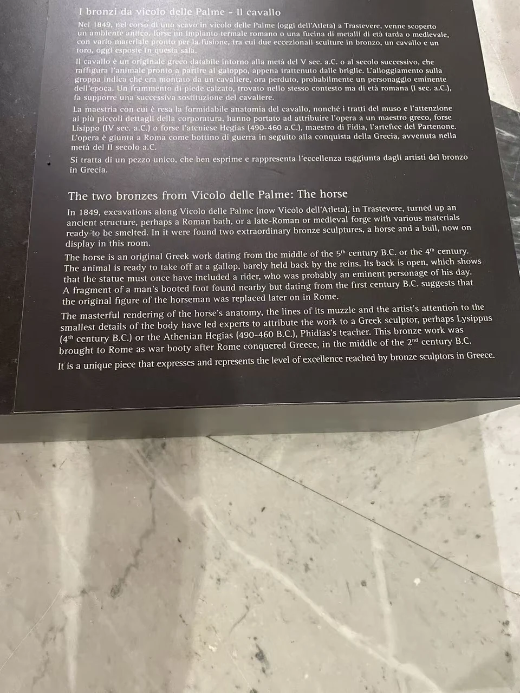

BRONZE / B07
帕尔梅巷青铜马
马的躯干与四肢形成宽阔的支撑，残缺没有掩去原来昂起头部的姿态。

- 年代
- 公元前5–4世纪
- 材料
- 青铜
- 形制
- 动物雕像
- 收藏与观看
- 卡比托利欧博物馆 · 罗马
- 馆藏号
- 待核实
帕尔梅巷的发现
现场展签将青铜马置于公元前5—4世纪，记录它于1849年在罗马台伯河西岸的帕尔梅巷（Vicolo delle Palme）一带发现。馆方修复介绍采用公元前5世纪的归属，并讨论其作为希腊铜像在罗马保存的经历。 [10]
附近发现的青铜公牛后躯提供了另一种动物身体。不过，相近的发现地点尚不足以证明马与牛原属一个雕塑组合。金属的运输、收藏和回收，都可能改变作品之间后来形成的关系。
先认出动物的站姿，再追问它怎样来到罗马。
现场展签与背景说明

资料与来源
断代、归属与收藏资料
馆藏号尚未从可靠的馆方对象记录确认。现场展签写公元前5—4世纪，修复展标题采用公元前5世纪，两者范围略有差异。 [10]
基本资料亦参见本页现场展签；照片中的细节与馆方解释分别叙述。